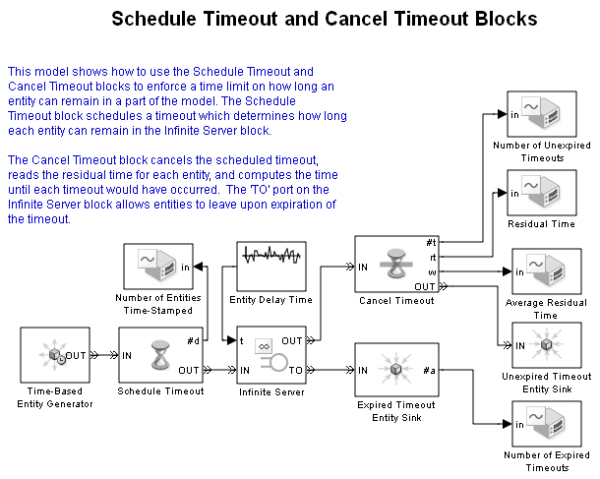

Schedule Timeout and Cancel Timeout Blocks
Contents
Description
This model shows how to use the Schedule Timeout and Cancel Timeout blocks to enforce a time limit on how long an entity can remain in a part of the model.
The Schedule Timeout block schedules a timeout which determines how long each entity can remain in the Infinite Server block. The Cancel Timeout block cancels the scheduled timeout, reads the residual time for each entity, and computes the time until each timeout would have occurred. The 'TO' port on the Infinite Server block allows entities to leave upon expiration of the timeout.
If the service time in the Infinite Server block is less than the timeout duration of the entity, then the timeout will be cancelled by the Cancel Timeout block upon completion of service.
